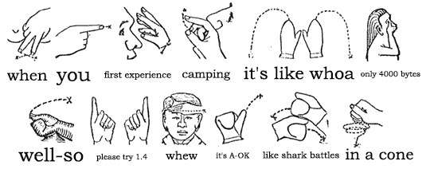

If You Want to Tell Your Friend About Camping But Unfortunately His Headphones Are Too Loud #

The biggest changes have been previously described, many minor bugfixes, large file downloading and uploading.
- Download:
gem install camping
(Updates ActiveRecord to >=1.14.0, Markaby to >= 0.4) - Docs: camping.rubyforge.org
- Wiki: code.whytheluckystiff.net/camping
But that’s all kind of overkill when it’s just:
%w[rubygems active_record markaby metaid tempfile uri].each{|l|require l}
module Camping;C=self;F=__FILE__;S=IO.read(F).gsub(/_+FILE_+/,F.dump)
module Helpers;def R c,*args;p=/\(.+?\)/;args.inject(c.urls.find{|x|x.scan(p).
size==args.size}.dup){|str,a|str.sub(p,(a.__send__(a.class.primary_key)rescue
a).to_s)} end;def URL c='/',*a;c=R(c,*a)if c.respond_to?:urls;c=self/c;c=
"http://"+@env.HTTP_HOST+c if c[/^\//];URI(c) end;def / p;p[/^\//]?@root+p:p end
def errors_for o;ul.errors{o.errors.each_full{|x|li x}}if o.errors.any? end end
module Base;include Helpers;attr_accessor :input,:cookies,:env,:headers,:body,
:status,:root;def method_missing m,*a,&b;s=m==:render ? markaview(*a,&b):eval(
"markaby.#{m}(*a,&b)");s=markaview(:layout){s} if Views.method_defined?:layout
r 200,s.to_s end;def r s,b,h={};@status=s;@headers.merge!(h);@body=b end;def
redirect *a;r 302,'','Location'=>URL(*a) end;def initialize r,e,m;e=H[e.to_hash]
@status,@method,@env,@headers,@root=200,m.downcase,e,{'Content-Type'=>"text/htm\
l"},e.SCRIPT_NAME.sub(/\/$/,'');@k=C.kp e.HTTP_COOKIE;q=C.qs_parse e.QUERY_STRING
@in=r;if %r|\Amultipart/form-.*boundary=\"?([^\";,]+)|n.match e.CONTENT_TYPE;b=
"--#$1";@in.read.split(/(?:\r?\n|\A)#{Regexp.quote b}(?:--)?\r\n/m).map{|y|h,v=y.
split "\r\n\r\n",2;fh={};[:name,:filename].map{|x|fh[x]=$1 if h=~/^Content-Di.+\
: form-data;.*(?:\s#{x}="([^"]+)")/m};fn=fh[:name];if fh[:filename];fh[:type]=
$1 if h=~/^Content-Type: (.+?)(\r\n|\Z)/m;fh[:tempfile]=Tempfile.new(:C).
instance_eval{binmode;write v;rewind;self}else;fh=v end;q[fn]=fh if fn}elsif
@method=="post";q.merge! C.qs_parse(@in.read) end;@cookies,@input=
@k.dup,q.dup end;def service *a;@body=send(@method,*a)if respond_to?@method
@headers["Set-Cookie"]=@cookies.map{|k,v|"#{k}=#{C.escape(v)}; path=#{self/"/"}\
" if v != @k[k]}.compact;self end;def to_s;"Status: #{@status}\n#{@headers.map{
|k,v|[*v].map{|x|"#{k}: #{x}"}*"\n"}*"\n"}\n\n#{@body}" end;def markaby;Mab.new(
instance_variables.map{|iv|[iv[1..-1],instance_variable_get(iv)]}) end;def
markaview m,*a,&b;h=markaby;h.send m,*a,&b;h.to_s end end;class R;include Base
end;module Controllers;class NotFound;def get p;r(404,div{h1 "Cam\ping Problem!"
h2 p+" not found"}) end end;class ServerError;include Base;def get k,m,e;r(500,
Mab.new{h1 "Cam\ping Problem!";h2 "#{k}.#{m}";h3 "#{e.class} #{e.message}:";ul{
e.backtrace.each{|bt|li(bt)}}}.to_s)end end;class<<self;def R *urls;Class.new(
R){meta_def(:urls){urls}}end;def D path;constants.inject(nil){|d,c|k=const_get c
k.meta_def(:urls){["/#{c.downcase}"]}if !(k<R);d||([k,$~[1..-1]]if k.urls.find{
|x|path=~/^#{x}\/?$/})}||[NotFound,[path]] end end end;class<<self;def goes m
eval(S.gsub(/Camping/,m.to_s),TOPLEVEL_BINDING)end;def escape s;s.to_s.gsub(
/([^ a-zA-Z0-9_.-]+)/n){'%'+$1.unpack('H2'*$1.size).join('%').upcase}.tr ' ','+'
end;def un s;s.tr('+', ' ').gsub(/((?:%[0-9a-fA-F]{2})+)/n){[$1.delete('%'
)].pack('H*')} end;def qs_parse q,d='&;';m=proc{|_,o,n|o.merge(n,&m)rescue([*o
]<<n)};q.to_s.split(/[#{d}] */n).inject(H[]){|h,p|k,v=un(p).split('=',2)
h.merge k.split(/[\]\[]+/).reverse.inject(v){|x,i|H[i,x]},&m}end;def kp(s);c=
qs_parse(s,';,')end;def run r=$stdin,e=ENV;k,a=Controllers.D un("/#{e['PATH_INFO']
}".gsub(/\/+/,'/'));k.send:include,C,Base,Models;k.new(r,e,(m=e['REQUEST_METHOD'
]||"GET")).service *a;rescue=>x;Controllers::ServerError.new(r,e,'get').service(
k,m,x)end end;module Views;include Controllers,Helpers end;module Models;A=
ActiveRecord;Base=A::Base;def Base.table_name_prefix;"#{name[/^(\w+)/,1]}_".
downcase.sub(/^(#{A}|camping)_/i,'')end end;class Mab<Markaby::Builder;include \
Views;def tag! *g,&b;h=g[-1];[:href,:action,:src].map{|a|(h[a]=self/h[a])rescue
0};super end end;H=HashWithIndifferentAccess;class H;def method_missing m,*a
if m.to_s=~/=$/;self[$`]=a[0];elsif a.empty?;self[m];else;raise NoMethodError,
"#{m}" end end end end

LninYo
awesome! can we make a one time amendment to the code size limit and let it go up to 8k at least? ;)
thanks, camping is awesome!
Dave Burt
But 4000 characters fit on an 80×50 terminal. You wouldn’t want to have to use a pager to see all of your web framework, now, would you?
Piotr Usewicz
wtf… it’s insane ;] I LOVE RUBY !
WWWWolf
80×50? What leetness is this? I’m still using 80×25…
Oh well, pagers aren’t that bad, really =)
LninYo
But seriously, the reason is that all the uber-hackery means its hard to follow for mere mortals like me, and also when things go wrong, its hard to sort of fix it yourself.
Its teh coolest to have <4k, but the meta-magic has its price and methinks it comes in the form of complexity and possible memory leaks over time which some ppl have mentioned in the past.
I guess what the world needs to know is: Does Camping Scale? (lol), or, should one be using camping for realworld apps?? I mean I’d like to because its very intuitive, but I can’t because I’m not l33t enough to fix it when something gets borked in the meta-magic.
I guess it was not meant for actual day to day use, but I have trouble believing it.
Don’t get me wrong, I love the academic potential of camping, and all the magic _why has infused into it.. So I suggested 8k for leeway! you could put 4k on the front of the shirt and 4k on the back.. so 8k should be workable non?
I apologise for not giving why enough credit; that is not the intent. Maybe this can be done in 4k, but it scares folks like moi because I think it would be so complex my brain would explode.
why
The memory hog was Markaby 0.3.
If you need Camping all laid out nice, just ask for camping-unabridged.rb.
4k has lots of leeway. We presently have 131 bytes to burn!
fibr3
i installed this yesterday on my local box and i am no longer getting correct doctypes output in markaby; i tried uninstalling and reverting markaby to 0.3 but i’m still having the same problem, all i get is for both xhtml_strict (which i want) and vanilla html this is with rails – i have the same ‘app’ working remotely with 0.3 – any ideas? i’ve cleaned eveything like a crazy housewife but no dice
same with webrick & mongrel 0.3.12.4
fibr3
guess your comments cleaned my tags – all i get is <!DOCTYPE html PUBLIC >
<|:{
LninYo said: ”... but the meta-magic has its price and methinks it comes in the form of complexity and possible memory leaks “
Please. take your memory leak outside of the tent out in that grove of trees over there. Everyone will be much happier.
FlashHater
Your favorite microframework on a T-shirt! (I know, it’s cafepress and it’s expensive, but here it is anyway.) http://www.cafepress.com/cp/prod.aspx?p=campingtlw.54181211
FlashHater
PS: The price for the shirt linked above is WITHOUT ANY markup. Seriously. But it IS a black tshirt, so I suppose it might be worth it.
tim
fibr3: that’s fixed in r35
fibr3
cheers tim :D
Pelle
Just went camping for the first time and the result is TimeCert which was basically written over breakfast. Thanks Why.
Comments are closed for this entry.